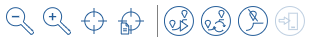
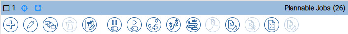
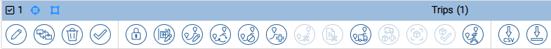

Open Details — · · ·
Every row in every grid has a ··· button on the left. This is separate from the toolbar but works the same way everywhere in Tramm.
| Where | What it does |
|---|---|
|
··· on a grid row |
Opens the full detail panel for that record — all fields, history, and chat — without leaving the grid. No selection or toolbar click needed; just click the dots on any row. |
|
··· on a field inside a detail panel |
Reference fields (such as Vehicle Class, Product Group, or Site) show their own ··· button. Clicking it opens the detail panel for that referenced record — letting you drill into related data without navigating away. |
Standard Toolbar Buttons
These buttons appear in the toolbar of every app that has a grid. They always do the same thing, regardless of which app you are in.
| Button | What it does |
|---|---|
|
Add No selection needed |
Opens a blank form to create a new record. Available on all entity types. |
|
Duplicate One record selected |
Creates a copy of the selected record, pre-filled with the same values. Useful for creating similar records without starting from scratch — for example, a new vehicle of the same class. |
|
Edit One record selected |
Opens the selected record for editing. Only fields the current user has permission to change will be editable. |
|
Set Security Groups One or more records selected |
Assigns the selected records to a security group, controlling which users can view or edit them. Only relevant where record-level access control has been configured. |
|
Activate / Deactivate One or more records selected |
Toggles the selected records between active and inactive. Inactive records are hidden from most workflows and cannot be selected in forms — for example, an inactive vehicle class will not appear as an option when adding a vehicle. |
|
Delete One or more records selected |
Deletes the selected record(s). Tramm will warn if a record is referenced by other data — for example, a site that is still used on active trips cannot be deleted. |
|
Import No selection needed |
Imports records from an Excel file. A template can usually be downloaded first to ensure the correct column structure. Available on most master data entity types. |
|
Export No selection needed |
Exports all records (or the current filtered set) to an Excel file. Useful for bulk review, reporting, or preparing data for re-import. |
|
Transition One or more records selected |
Changes the state of the selected record(s). The available transitions depend on the entity type and its current state — for example, a Trip can be Confirmed, Cancelled, or set back to Planned. See the relevant app guide for the state flow of each entity. |
Planner
The Planner has its own set of action buttons for building and managing trip plans. These are in addition to the standard toolbar buttons above. For a visual guide with button screenshots, see the Planner Quick Reference Card.
Gantt view controls

Gantt view controls — shown above the schedule timeline.
| Button | What it does |
|---|---|
Zoom In |
Zooms in on the Gantt timeline to show more detail — useful when trips or stops are close together. |
Zoom Out |
Widens the time window so you can see more trips at once — useful for a bird's-eye view of the day. |
Show Selected Stop |
When turned on, the Gantt automatically scrolls to show the selected trip whenever you click a row. Click again to turn off. |
Show Loading Date |
Scrolls the Gantt to the date when the selected job or order is scheduled to load. |
Recalculate Trip One trip selected |
Triggers a manual recalculation of travel times and estimated arrival times for the selected trip. Use after changing stops or time windows. |
Remove Stop |
Removes the selected stop from its trip directly from the Gantt. The job returns to the unplanned list.
Only use on regular stops — not the first or last stop on a trip. |
Publish Trip |
Pushes the latest trip updates to the driver's mobile app. Only relevant for trips that are already confirmed and being executed by a driver. |
Orders
| Button | What it does |
|---|---|
Set Time Windows One or more selected |
Sets pickup and delivery time constraints on the selected orders. Once set, the planner will respect these windows when scheduling. |
Toggle Plannable One or more selected |
Switches the selected orders between Plannable and Not Plannable. Only plannable orders can be converted to jobs and scheduled. |
Convert to Jobs One or more selected |
Transforms the selected orders into jobs — the units the planner works with when building trips. Select multiple orders to convert them all at once. |
Remove Jobs One or more selected |
Removes the jobs linked to the selected orders and returns the orders to an unconverted state. Use if an order was converted by mistake or if you need to restart planning.
If the jobs are already on a trip, unplan them from the trip first. |
Jobs

Jobs panel toolbar — buttons for working with the selected jobs.
| Button | What it does |
|---|---|
Set Time Windows One or more selected |
Sets pickup and delivery time constraints directly on jobs. The planner will respect these when building and recalculating trips. |
Toggle Plannable One or more selected |
Marks the selected jobs as Plannable (ready to be added to a trip) or Not Plannable (held back). Only Plannable jobs can be placed on a trip. |
Toggle On-Hold One or more selected |
Places jobs on hold — even if they are marked as Plannable, on-hold jobs are excluded from planning until the hold is lifted. |
Build Trip One or more selected |
Opens the Trip Builder so you can create a new trip from the selected jobs. Select multiple jobs to combine them into a single trip. |
Build Trip from Master Route One or more selected |
Creates a trip using a pre-saved route template. The trip is pre-populated with the standard stops from the template. |
Build Trips from Master Route Set No selection needed |
Creates multiple trips at once from a saved route set — useful when daily operations follow a fixed pattern saved as a template. |
Unplan One or more selected |
Removes the selected jobs from their trips and returns them to the unplanned list — useful if a job has been placed on the wrong trip. |
Cancel One or more selected |
Cancels the selected jobs. Cancelled jobs are removed from any trips they are on.
This is difficult to reverse — check with your team leader before cancelling. |
Trips

Trips panel toolbar — buttons for managing planned and live trips.
| Button | What it does |
|---|---|
Edit Trip One trip selected |
Opens the Trip Builder for the selected trip so you can change stops, sequence, timing, vehicle, or driver. |
Recalculate Trip One trip selected |
Updates the estimated travel times and arrival times for the selected trip. Run this after editing stops or their sequence. |
Update Trip Allocation One or more selected |
Changes the vehicle, driver, or transporter assigned to the selected trip(s) — for example, when the original vehicle becomes unavailable. |
Add Manual Stop One trip selected |
Adds an extra stop to a trip that is not linked to a job — for example, a fuel stop or weigh bridge. |
Merge Trips Two or more selected |
Combines the selected trips into a single trip.
Check that the vehicle can handle the combined load and that all time windows can still be met after merging. |
Toggle Locks One trip selected |
Locks or unlocks the stops on a trip. Locked stops are protected from accidental changes — lock a trip when you are happy with the plan. |
Confirm Plan One or more selected |
Moves the selected trips from Planned to Confirmed. Once confirmed, the trip becomes visible to the driver and is automatically picked up by Tramm Mobile. |
Move Trip One or more selected |
Moves the selected trips to a different date — for example, if a trip needs to be rescheduled due to a public holiday or vehicle availability. |
Update Actuals One trip selected |
Enters the real-world execution data for a trip — actual arrival and departure times — once the trip has started or completed. |
Cancel Trip One or more selected |
Cancels the selected trips. The jobs on the trip are returned to the unplanned list.
This cannot be reversed — only cancel a trip if it genuinely cannot go ahead. |
Abort Trip One trip selected |
Stops a trip that is already in progress — for example, due to a breakdown or road closure.
Only use for trips that have already started. For trips that have not yet departed, use Cancel Trip instead. |
Export Planned Jobs One or more selected |
Downloads the jobs on the selected trips to a CSV or Excel file — useful for sharing with someone who does not have access to Tramm. |
Trip Builder
| Button | What it does |
|---|---|
Optimize Trip |
Automatically reorders the stops on the trip to find the most efficient sequence. You can still adjust the order manually after optimising. |
Apply Master Route |
Applies a saved route template to the trip, pre-populating it with the standard stops for that route. |
Commit |
Saves the trip and all its details. The trip is created in Planned state — it will not be visible to the driver until it is confirmed. |
Close |
Closes the Trip Builder without saving. The selected jobs remain unplanned. |
Execution Manager
In addition to the standard toolbar buttons above, Execution Manager has action buttons for managing live trip execution.
Data Manager
Data Manager uses the standard toolbar buttons only — there are no additional app-specific toolbar buttons. See the Data Manager guide for a full overview of the app.